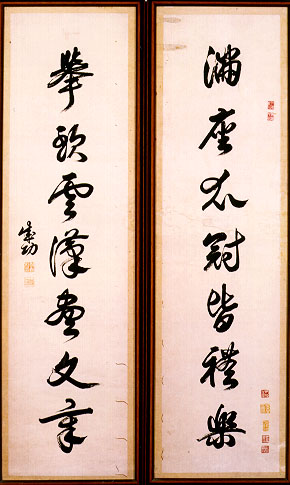

義助慰安婦 —— 李敖百件珍藏義賣藝術品（第79件） 品 名： H9. 台灣史印聯（鄭成功聯） 預估價： 20 萬 成交價： 20 萬 說 明： 本件作品是鄭成功遺墨中罕見的對聯印本。上聯「滿座衣冠皆禮樂」，下聯「舉頭雲漢盡文章」，顯示其不凡的氣魄。在台灣史料中，鄭成功為一特殊豪傑之士，他為堅持反清復明的理想，在山窮水盡之際從大陸來台；目前所件的遺墨極少。本件的真蹟下落不明，雖是印本，但因有關鄭成功的史料極少，故不失其珍貴價值。 
本件作品是鄭成功遺墨中罕見的對聯印本。上聯「滿座衣冠皆禮樂」，下聯「舉頭雲漢盡文章」，顯示其不凡的氣魄。在台灣史料中，鄭成功為一特殊豪傑之士，他為堅持反清復明的理想，在山窮水盡之際從大陸來台；目前所件的遺墨極少。本件的真蹟下落不明，雖是印本，但因有關鄭成功的史料極少，故不失其珍貴價值。